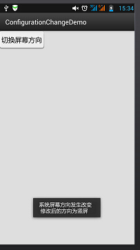
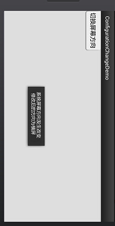

一、本节引言：
本节给大家介绍的Configuration类是用来描述手机设备的配置信息的，比如屏幕方向， 触摸屏的触摸方式等，相信定制过ROM的朋友都应该知道我们可以在: frameworks/base/core/java/android/content/res/Configuration.java 找到这个类，然后改下相关设置，比如调整默认字体的大小！有兴趣可自行了解！ 本节讲解的Configuration类在我们Android开发中的使用~ API文档：Configuration
二、Configuration给我们提供的方法列表
densityDpi：屏幕密度fontScale：当前用户设置的字体的缩放因子hardKeyboardHidden：判断硬键盘是否可见，有两个可选值：HARDKEYBOARDHIDDEN_NO,HARDKEYBOARDHIDDEN_YES，分别是十六进制的0和1keyboard：获取当前关联额键盘类型：该属性的返回值：KEYBOARD_12KEY（只有12个键的小键盘）、KEYBOARD_NOKEYS、KEYBOARD_QWERTY（普通键盘）keyboardHidden：该属性返回一个boolean值用于标识当前键盘是否可用。该属性不仅会判断系统的硬件键盘，也会判断系统的软键盘（位于屏幕）。locale：获取用户当前的语言环境mcc：获取移动信号的国家码mnc：获取移动信号的网络码ps:国家代码和网络代码共同确定当前手机网络运营商navigation：判断系统上方向导航设备的类型。该属性的返回值：NAVIGATION_NONAV（无导航）、 NAVIGATION_DPAD(DPAD导航）NAVIGATION_TRACKBALL（轨迹球导航）、NAVIGATION_WHEEL（滚轮导航）orientation：获取系统屏幕的方向。该属性的返回值：ORIENTATION_LANDSCAPE（横向屏幕）、ORIENTATION_PORTRAIT（竖向屏幕）screenHeightDp，screenWidthDp：屏幕可用高和宽，用dp表示touchscreen：获取系统触摸屏的触摸方式。该属性的返回值：TOUCHSCREEN_NOTOUCH（无触摸屏）、TOUCHSCREEN_STYLUS（触摸笔式触摸屏）、TOUCHSCREEN_FINGER（接收手指的触摸屏）
三、写个简单例子测试下：
运行截图：

代码实现：
public class MainActivity extends AppCompatActivity {
@Override
protected void onCreate(Bundle savedInstanceState) {
super.onCreate(savedInstanceState);
setContentView(R.layout.activity_main);
TextView txtResult = (TextView) findViewById(R.id.txtResult);
StringBuffer status = new StringBuffer();
//①获取系统的Configuration对象
Configuration cfg = getResources().getConfiguration();
//②想查什么查什么
status.append("densityDpi:" + cfg.densityDpi + "\n");
status.append("fontScale:" + cfg.fontScale + "\n");
status.append("hardKeyboardHidden:" + cfg.hardKeyboardHidden + "\n");
status.append("keyboard:" + cfg.keyboard + "\n");
status.append("keyboardHidden:" + cfg.keyboardHidden + "\n");
status.append("locale:" + cfg.locale + "\n");
status.append("mcc:" + cfg.mcc + "\n");
status.append("mnc:" + cfg.mnc + "\n");
status.append("navigation:" + cfg.navigation + "\n");
status.append("navigationHidden:" + cfg.navigationHidden + "\n");
status.append("orientation:" + cfg.orientation + "\n");
status.append("screenHeightDp:" + cfg.screenHeightDp + "\n");
status.append("screenWidthDp:" + cfg.screenWidthDp + "\n");
status.append("screenLayout:" + cfg.screenLayout + "\n");
status.append("smallestScreenWidthDp:" + cfg.densityDpi + "\n");
status.append("touchscreen:" + cfg.densityDpi + "\n");
status.append("uiMode:" + cfg.densityDpi + "\n");
txtResult.setText(status.toString());
}
}
四、重写onConfigurationChanged响应系统设置更改
该方法用于监听系统设置的更改,是基于回调的事件处理方法,当系统的设置发生改变时就会自动触发; 但是要注意一点,使用下面的方法监控的话,targetSdkVersion属性最高只能设置为12,高于12的话,该方法不会被激发！这里写个横竖屏切换的例子给大家参考参考，其他的可自行谷歌~
代码示例：简单的一个按钮,点击后切换横竖屏,然后Toast提示
运行效果图：
 
实现代码：
public class MainActivity extends Activity {
@Override
protected void onCreate(Bundle savedInstanceState) {
super.onCreate(savedInstanceState);
setContentView(R.layout.activity_main);
Button btn = (Button) findViewById(R.id.btncahange);
btn.setOnClickListener(new OnClickListener() {
@Override
public void onClick(View v) {
Configuration config = getResources().getConfiguration();
//如果是横屏的话切换成竖屏
if(config.orientation == Configuration.ORIENTATION_LANDSCAPE)
{
MainActivity.this.setRequestedOrientation(ActivityInfo.SCREEN_ORIENTATION_PORTRAIT);
}
//如果竖屏的话切换成横屏
if(config.orientation == Configuration.ORIENTATION_PORTRAIT)
{
MainActivity.this.setRequestedOrientation(ActivityInfo.SCREEN_ORIENTATION_LANDSCAPE);
}
}
});
}
@Override
public void onConfigurationChanged(Configuration newConfig) {
super.onConfigurationChanged(newConfig);
String screen = newConfig.orientation == Configuration.ORIENTATION_LANDSCAPE?"横屏":"竖屏";
Toast.makeText(MainActivity.this, "系统屏幕方向发生改变 \n 修改后的方向为" + screen, Toast.LENGTH_SHORT).show();
}
}
另外，还需要在AndroidManifest.xml添加下述内容：
权限: <uses-permission android:name="android.permission.CHANGE_CONFIGURATION" />
在<activity标签中添加:android:configChanges="orientation" 将targetSdkVersion改为12以上的,12也可以
五、本节小结：
本节给大家讲解了：Configuration类以及onConfigurationChanged响应系统设置更改，有个大概了解即可 后续用到我们再继续深入~